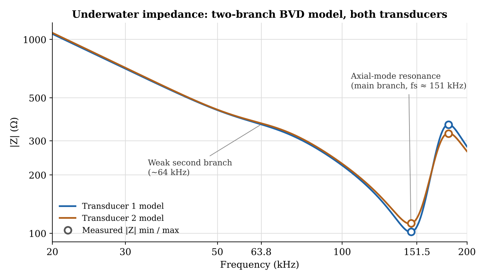

Underwater acoustic modem
ARVP RoboSub team · Jul 2026 – now
Helping the team build a modem so our subs can talk underwater. I’ve tested and modelled the piezo transducers in MATLAB, and now I’m working on the transmit circuit.
MATLAB · LTspice · Analog Discovery 2